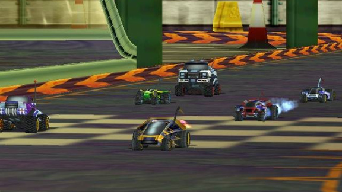
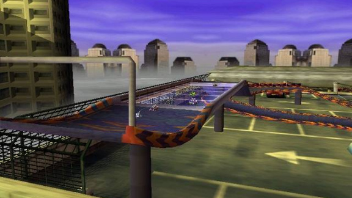
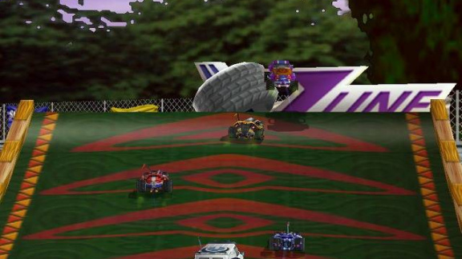
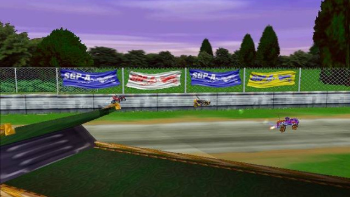
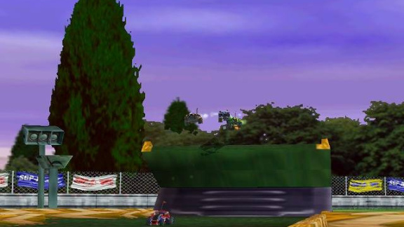

Stunt GP





Details
My notes
I played this too, but it is not the cartoonish egg-shaped car game.
Confirmed memory. Stunt GP (2001) is a toy-car racing game with ramps, loops, and stunts. Its demo was included on Digit’s June 2001 Playware CD. The exact disc I played is not confirmed.
About the game
- Released
- 2001
- Developer
- Team17
- Type
- Radio-controlled toy-car racing with stunt tracks
- Remembered platform
- PC
Things to recognise
- Small remote-controlled cars on tracks built around jumps, loops, ramps, and spirals.
- A battery meter: energy management is part of driving.
- Racing and stunt challenges, rather than ordinary road-car racing.
The demo
The January 2001 demo listing names three cars: Sand Shark, Stunt Monkey, and Mean Streak. It includes The Bank Job and Skytop Speed Circuit, with Exhibition and Stunt Challenge modes.
Digit’s June 2001 disc listing includes the demo. That establishes a magazine connection, but does not identify which copy I played.